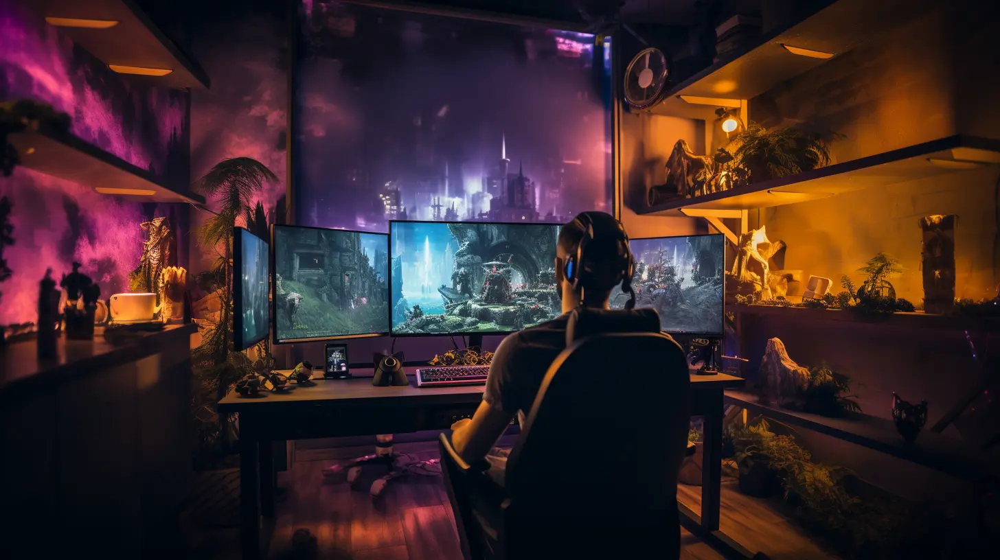

Cloud Gaming: The Revolution of Video Games
Cloud Gaming has revolutionized the gaming industry, offering accessibility and convenience...
In recent years, the gaming industry has undergone an unprecedented transformation thanks to the advent of Cloud Gaming. This technology, also known as game streaming, has disrupted traditional gaming experiences, opening new horizons for players worldwide. But what are the future prospects of this revolution? And how much potential does Cloud Gaming have in redefining how we play?
The concept behind Cloud Gaming is simple yet powerful: instead of relying on local hardware, video games are hosted on remote servers in dedicated data centers. Players can then stream the game directly to their devices through an internet connection. This technology eliminates the need for expensive hardware or physical media, paving the way for a new era of accessibility and convenience.
One of the major advantages of Cloud Gaming is the ability to play on any device, at any time, as long as you have a good internet connection. Whether it's a PC, console, smartphone, or smart TV, Cloud Gaming offers the flexibility to play wherever you are. This lowers the barrier of entry for gamers, removing the need to meet specific technical requirements to enjoy high-quality gaming experiences.
But Cloud Gaming goes beyond just accessibility. This technology has paved the way for new business models and has influenced the design of games themselves. Subscription services like Xbox Game Pass and PlayStation Now offer players a wide selection of games for a monthly fee, eliminating the need to purchase individual titles. This new approach could redefine the entire gaming industry, opening up new avenues for distribution and monetization of products.
However, Cloud Gaming is not without challenges. One of the main obstacles is latency and streaming quality. While technological advancements and increased bandwidth have contributed to overall improvements in the gaming experience, video compression required for streaming can reduce visual quality compared to games installed via disk or direct download. Additionally, there are still technical limitations that prevent certain high-speed titles from being played in some parts of the world.
Despite these challenges, Cloud Gaming continues to gain popularity and attract the attention of major industry players. Google has launched Stadia, an operating system-independent cloud gaming platform, while Sony has its PlayStation Now, offering a vast library of games from both old and new generations. Microsoft has responded with Xbox Cloud Gaming, included in the Xbox Game Pass service, which has gained millions of subscribers.
The future of Cloud Gaming looks very promising. With the expansion of 5G and increased coverage of high-speed internet connections, streaming quality will further improve, and players will be able to enjoy increasingly smooth and immersive gaming experiences. Furthermore, the evolution of artificial intelligence and data processing technologies may open up new opportunities in the field of interactivity and social integration in streaming games.
Cloud Gaming is revolutionizing the world of video games. Its ability to offer seamless gaming experiences on any device and the opportunity to access a vast library of games through subscription services are just the beginning of a new era in the industry. Despite the technical challenges to overcome, the potential of Cloud Gaming in redefining how we play is undeniable. So get ready because the future of video games is here, and it's all in the cloud.